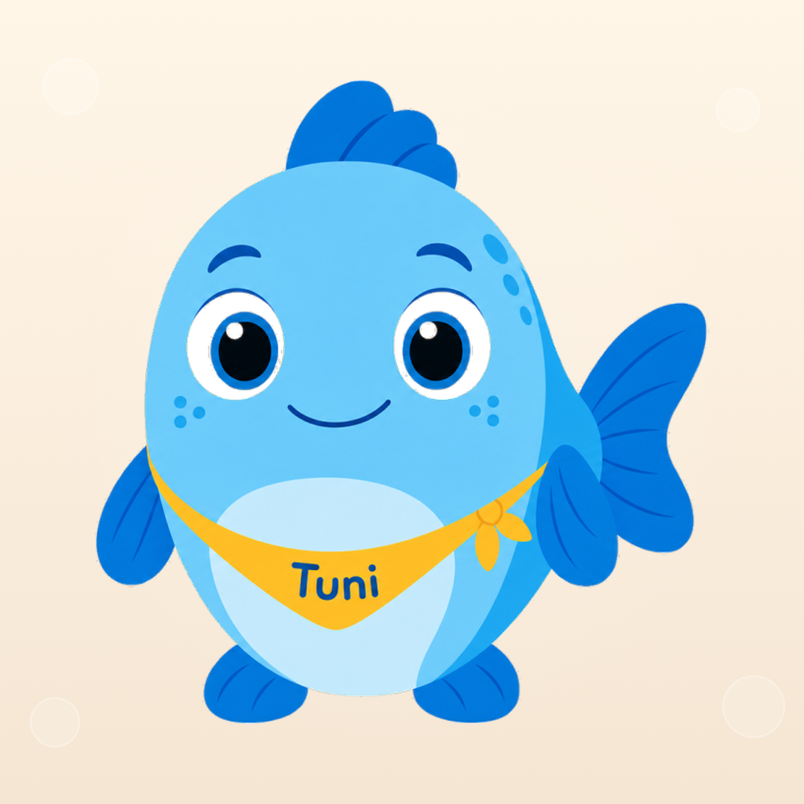

Política de privadesa
Mundo Tuni: Aprende Jugando · Versió 1.9 · 12 de novembre de 2026
Aquest document és una traducció al català de la política de privadesa, l'original de la qual està redactat en castellà (es-ES). També està disponible en anglès: English version, i en castellà: Versión en español.
El més important
- No demanem el nom, la data de naixement, la ubicació ni un compte de l'infant.
- Quan s'inicia, l'app pregunta a la persona adulta l'edat aproximada de l'infant (es pot ometre) i desa només una franja (2 anys, 3 anys o de 4 a 6 anys) al dispositiu per ajustar quins jocs apareixen i la seva dificultat. La persona adulta la pot canviar a la zona per a adults. L'app no l'envia a cap servei.
- No hi ha publicitat ni analítica del comportament de l'infant.
- El progrés, les preferències i els comptadors d'ús es desen només al dispositiu.
- Les compres les gestiona RevenueCat amb un identificador tècnic pseudònim (un codi aleatori, sense nom ni correu); la recollida automàtica d'identificadors del dispositiu està desactivada.
- Des de la versió 2.5, l'app ja no fa servir l'atribució d'Apple Ads (AdServices). No fa servir IDFA ni seguiment entre apps.
- Des de la zona per a adults es pot preparar una sol·licitud d'esborrat del perfil tècnic de compres.
- La zona per a adults i les compres estan protegides per una comprovació parental.
- Només si una persona adulta l'activa, el racó d'idiomes fa servir el micròfon perquè l'infant senti la seva pròpia veu quan repeteix una paraula. L'enregistrament es queda al dispositiu, s'esborra tan bon punt sona i no s'envia mai.
1 Qui som?
Responsable del tractament: el titular de Mundo Tuni, les dades d'identificació del qual (nom i cognoms, NIF i domicili) consten a l'avís legal. Correu de contacte: hola@mundotuni.com.
Aplicació: Mundo Tuni: Aprende Jugando
Bundle ID: es.mundotuni.tuni
Plataformes: iOS (App Store) i Android (Google Play)
Idiomes: castellà, català i anglès. El joc es mostra en l'idioma de joc triat. La zona per a adults (comprovació parental, configuració, compra, «Per a famílies» i avisos) es mostra en l'idioma del dispositiu: el primer de la llista d'idiomes del dispositiu que tingui l'app o, si no en té cap, en anglès.
Aquesta política explica quines dades intervenen en l'ús de l'app i, a la secció 14, als perfils oficials de Mundo Tuni a les xarxes socials. Mundo Tuni no demana el nom, la data de naixement ni un compte de l'infant. Només pregunta, de manera opcional, la seva edat aproximada per triar una franja (2 anys, 3 anys o de 4 a 6 anys), que ajusta els jocs i la seva dificultat i es desa al dispositiu (secció 4). El progrés educatiu també es desa al dispositiu. Per a l'accés premium, l'SDK de RevenueCat s'inicia en obrir l'app i fa servir un identificador tècnic pseudònim; en comprar o restaurar, tracta a més la informació de la transacció que faciliten Apple o Google. Tot això es detalla a les seccions 5 i 8.
Aquesta política també explica el tractament de les dades de les persones que participen en la prova tancada d'Android (secció 15).
2 Àmbit i usuaris
Mundo Tuni: Aprende Jugando és una aplicació educativa per a nenes i nens de 2 a 6 anys, pensada per fer-se servir amb la supervisió d'un pare, mare o tutor legal («tutor»).
Està dissenyada des del principi per protegir la privadesa dels menors: no requereix registre ni demana informació que identifiqui l'infant. L'única pregunta sobre l'infant és la seva edat aproximada, que es desa com a franja i no surt del dispositiu. El joc i el contingut educatiu funcionen sense connexió. Les funcions de compra i restauració descrites en aquesta política sí que es connecten a serveis externs quan hi ha xarxa.
3 Dades que no demanem
L'app no demana a l'infant ni a la persona adulta cap d'aquestes dades:
- Nom ni cognoms.
- Correu electrònic ni número de telèfon.
- Ubicació precisa (GPS).
- Identificadors publicitaris IDFA o GAID.
- Dades biomètriques, de salut ni fotografies.
- Contactes del dispositiu.
- Càmera. El micròfon només es fa servir si una persona adulta activa «Repetir amb micròfon», i l'enregistrament no surt del dispositiu (secció 4).
- Historial de navegació ni ús d'altres apps.
- Dades de pagament ni informació bancària.
L'única pregunta sobre l'infant és la seva edat aproximada, que l'app fa a la persona adulta a la presentació inicial, que es pot ometre i que la persona adulta pot canviar després a la zona per a adults. No es desa l'edat exacta ni la data de naixement, sinó una franja (2 anys, 3 anys o de 4 a 6 anys), i només al dispositiu (secció 4).
Si ens escrius per demanar ajuda, enviar un suggeriment o exercir un dret, tractarem la teva adreça de correu i el contingut del missatge per respondre't (secció 10). L'opció «Envia un suggeriment» de la zona per a adults obre la teva app de correu amb un missatge a aquesta adreça que porta al final la versió de l'app i el sistema del dispositiu (per exemple, «iOS 18.1»), sense cap dada de l'infant; l'app no envia res: l'envies tu si vols. La bústia hola@mundotuni.com està allotjada a iCloud Mail, d'Apple. Els correus els llegeix el titular, que pot ajudar-se d'assistents d'intel·ligència artificial (actualment, Claude, d'Anthropic) per llegir-los i preparar respostes; els assistents llegeixen els correus per extreure'n conclusions i proposar respostes, i el contingut confidencial dels correus no es desa fora de la bústia; aquest proveïdor tracta les dades amb les seves pròpies condicions de servei i ho pot fer als EUA. No s'envia cap resposta sense l'aprovació del titular.
4 Dades que es desen al dispositiu
L'app desa informació per funcionar a l'emmagatzematge local del dispositiu (SharedPreferences i emmagatzematge propi de l'app). Aquestes dades no s'envien al desenvolupador ni a RevenueCat. En desinstal·lar l'app s'esborren, tot i que les còpies de seguretat del sistema operatiu les poden conservar si així ho tens configurat.
| Dada | Per a què | Tipus | On |
|---|---|---|---|
| Progrés educatiu (activitats, estrelles i adaptació de la dificultat; també el nivell assolit en cada joc de matemàtiques i les paraules que ha escoltat o triat al racó d'idiomes amb la Lola) |
Recordar l'avenç, adaptar l'experiència i mostrar el progrés a la persona adulta a la zona per a adults | Estat local, sense nom ni compte | Només local |
| Resum d'«Avui amb en Tuni» (de cadascun dels últims 8 dies amb joc: què ha completat, quantes vegades i quantes a la primera, el temps jugat i l'idioma de joc; de cada joc, quantes vegades l'ha encertat a la primera i l'últim dia que el va completar; i quines preguntes i idees per a casa ja ha mostrat l'app) |
Mostrar a la persona adulta, a la zona per a adults, un resum del que ha fet l'infant, una pregunta per parlar-ne i una idea per continuar sense pantalla, sense repetir-les cada dia | Registres i comptadors locals, sense nom ni compte | Només local |
| Franja d'edat (2 anys, 3 anys o de 4 a 6 anys; es tria a la presentació inicial i es canvia a la zona per a adults, a «Edat de la criatura») |
Ajustar quins jocs apareixen i la seva dificultat (per exemple, comptar fins a 5 o fins a 10). Si s'omet la pregunta, es fa servir la de 3 anys | Valor aproximat, sense edat exacta ni data de naixement | Només local |
| Preferències (so; idioma de joc i, en castellà, la variant d'Espanya o de Llatinoamèrica; subtítols d'en Tuni; ajuda per al daltonisme; mostrar o amagar el racó d'idiomes; temps de joc triat i recordatoris; temporada d'hivern i llums i regals de festes) |
Conservar la configuració triada per la família | Preferències locals | Només local |
| Temps de joc i final de sessió (temps jugat a la sessió en curs, hora en què acaba el descans i nombre de finals de sessió) |
Que en Tuni acabi el joc amb calma en arribar al temps triat, encara que l'app es tanqui i es torni a obrir, i que no repeteixi sempre el mateix comiat | Durades, hores i un comptador | Només local |
| Recompenses, presentació inicial i avisos (adhesius, el seu lloc a l'àlbum i les festes de món complet ja celebrades; amics de l'aquari i quins ja ha presentat en Tuni; quines recompenses ha explicat ja en Tuni, presentació inicial, illes que en Tuni ja ha proposat els primers dies o després d'una compra i data de l'última proposta, benvinguda després de la compra (si ja s'ha donat i el dia de la compra) i avisos de novetats i de temporada ja vistos) |
Mantenir les recompenses i no repetir les explicacions, les presentacions, les festes, les illes proposades ni els avisos | Estat local, sense compte | Només local |
| Dies de joc (últim dia en què es va jugar, últim dia en què en Tuni va saludar i últim element jugat de cada món) |
Mostrar a la persona adulta la data de l'última sessió, triar com saluda en Tuni en tornar, passar el recordatori al dia següent si aquell dia ja s'ha jugat i assenyalar a cada món l'últim que es va jugar | Dates i estat local | Només local |
| Comptadors d'ús | Mostrar a la persona adulta quantes vegades s'han fet certes accions (per exemple, obrir la pantalla de compra) i decidir quan suggerir una valoració (si la versió completa està activa, també es desa quan es va veure activa per primera vegada, per no demanar-la abans d'hora). La persona adulta pot copiar un informe des de la zona per a adults; l'app no l'envia | Comptadors i dates per tipus d'acció | Només local |
Recordatoris. Si la persona adulta els activa a la zona per a adults, l'app demana permís de notificacions al sistema i programa un recordatori diari com a notificació local del propi dispositiu. No passa per cap servidor.
Repetir amb micròfon. Ve desactivat. Si la persona adulta l'activa a la zona per a adults, l'app demana permís de micròfon al sistema. Després, al racó d'idiomes, quan la Lola ensenya una paraula, l'app escolta uns segons, desa la veu de l'infant en un fitxer temporal del dispositiu, la reprodueix una vegada perquè la compari amb la de la Lola i l'esborra en aquell moment. Si l'app es tanca a mig camí (per exemple, perquè el sistema l'atura), el fitxer s'esborra la propera vegada que s'obre l'app. La veu no es desa, no s'envia a cap servei i no es transcriu: l'app només en mesura el volum per saber quan comença i acaba de parlar. Es pot desactivar en qualsevol moment a la zona per a adults, o retirar el permís a la configuració del dispositiu.
Com esborrar aquestes dades
- Des de la zona per a adults: es poden reiniciar per separat el progrés, els adhesius i els comptadors de «Diagnòstic de conversió». Des de la versió 2.5, reiniciar el progrés esborra també el resum d'«Avui amb en Tuni» i els amics de l'aquari, amb la marca dels que en Tuni ja ha presentat (tornen a arribar amb les noves estrelles), i reiniciar els adhesius esborra també on estaven enganxats i les festes de món complet ja celebrades. A les versions anteriors, aquests reinicis no esborren els amics de l'aquari, el lloc dels adhesius ni les festes ja celebrades: s'esborren en desinstal·lar l'app o, després d'actualitzar a la 2.5, amb aquests mateixos reinicis. Reiniciar els comptadors no esborra les dades amb què l'app decideix quan suggerir una valoració (quantes sessions i en quins dies s'ha fet servir, quantes vegades i quan l'ha demanada, quan es va veure activa per primera vegada la versió completa i si la persona adulta ha marcat «Ja he valorat Mundo Tuni»); reiniciar el progrés tampoc no les esborra, i es queden al dispositiu fins que es desinstal·la l'app. La franja d'edat i les preferències no s'esborren des d'aquí (la franja sí que es pot canviar a «Edat de la criatura»), ni tampoc, entre altres dades, la data de l'últim dia de joc o l'estat del temps de joc.
- Desinstal·lant l'app: s'esborra tot el seu emmagatzematge local, incloses la franja d'edat i les preferències, tret del que conservin les còpies de seguretat del sistema operatiu.
5 Tercers i serveis externs
L'app Mundo Tuni no inclou publicitat, funcions de xarxes socials ni analítica del comportament de l'infant. Sí que fa servir RevenueCat per a les compres. En concret:
- Sense publicitat: no hi ha anuncis de cap mena.
- Sense analítica del comportament: no es fa servir Google Analytics, Firebase Analytics, Mixpanel, Amplitude ni eines similars per observar l'infant.
- Sense seguiment entre apps: no es fa servir IDFA ni GAID, i la configuració de RevenueCat desactiva la recollida automàtica d'identificadors del dispositiu.
- Sense xarxes socials a l'app: no hi ha botons de compartir ni inici de sessió amb altres plataformes. Els perfils oficials de Mundo Tuni a les xarxes socials es descriuen a la secció 14.
- Sense servidor propi: el desenvolupador no té servidors, bases de dades ni serveis al núvol per al progrés del joc.
RevenueCat (gestió de compres)
Les compres es gestionen amb l'SDK de RevenueCat (RevenueCat, Inc., EUA), que actua com a encarregat del tractament. L'SDK s'inicia en obrir l'app per comprovar si hi ha accés premium i carregar les opcions de compra. Per a això fa servir un identificador tècnic pseudònim: un codi aleatori que genera el propi SDK i que no conté el nom ni el correu de ningú. RevenueCat pot rebre a més les metadades tècniques necessàries per prestar el servei, com la versió de l'app i del sistema operatiu o l'adreça IP de la connexió. En comprar o restaurar, rep també la informació de la transacció que faciliten Apple o Google.
L'app no assigna a aquest perfil el nom ni el correu de la persona adulta ni cap dada de l'infant, i desactiva expressament la recollida automàtica d'identificadors del dispositiu. L'app tampoc no envia a RevenueCat un esdeveniment personalitzat d'impressió del paywall: el comptador d'obertures de la pantalla de compra es queda al dispositiu.
RevenueCat desa les dades a servidors dels EUA. Aquesta transferència s'empara en les Clàusules Contractuals Tipus de la Comissió Europea, incloses al seu acord d'encàrrec del tractament. Ens pots demanar informació sobre aquestes garanties, i una còpia, a hola@mundotuni.com. Més informació a la política de privadesa de RevenueCat.
Anuncis a l'App Store (Apple Ads)
De vegades anunciem Mundo Tuni a l'App Store (Apple Ads). Des de la versió 2.5, l'app no fa servir AdServices: no demana a Apple el testimoni d'atribució ni l'envia a RevenueCat. Apple mesura aquestes campanyes pel seu compte, segons la seva pròpia política de privadesa, i a nosaltres només ens mostra xifres de conjunt.
Les versions anteriors a la 2.5 sí que ho fan a iOS mentre no s'actualitzin: en obrir l'app, de manera automàtica i abans de la comprovació parental, l'SDK de RevenueCat obté el testimoni i l'envia a RevenueCat, que pregunta a Apple si la instal·lació procedeix d'una campanya d'Apple Ads; si és així, RevenueCat desa al perfil tècnic les dades de campanya que retorna Apple (campanya, grup d'anuncis, paraula clau i tipus d'atribució). Aquesta atribució no fa servir IDFA ni necessita el permís de seguiment (ATT), i no inclou el nom, la franja d'edat ni el progrés de l'infant. Les dades de campanya ja desades continuen al perfil tècnic fins que s'esborri (apartat següent), i només les fem servir per saber, de manera agregada, quines campanyes funcionen.
Sol·licitud d'esborrat del perfil tècnic de compres
Des de la zona per a adults es pot preparar un correu a hola@mundotuni.com per demanar l'esborrat del perfil tècnic de RevenueCat. Només quan la persona adulta ho confirma, l'app obté l'identificador tècnic i l'inclou a l'esborrany. L'app no copia aquest identificador en registres ni al seu propi emmagatzematge, i no envia el correu pel seu compte: l'envia la persona adulta si vol.
Esborrar aquest perfil no esborra el progrés local ni cancel·la, reemborsa o elimina la compra feta a Apple o Google. Després pot caldre fer servir «Restaura les compres» per recuperar l'accés premium.
Valoracions a la botiga
Des de la versió 2.5, l'app pot demanar al sistema que mostri el diàleg de valoració d'Apple o Google en tornar de l'apartat «El seu progrés» de la zona per a adults, si aquell dia s'ha jugat; en obrir, després de la comprovació parental, les opcions per a adults que apareixen en acabar el temps de joc, o amb la targeta «Per a famílies» d'un món oberta, si l'infant ja hi ha completat alguna cosa. Ho demana al cap d'uns segons, només si es compleixen uns mínims d'ús i mentre la persona adulta continua en aquella pantalla. Les versions anteriors ho poden demanar poc després d'entrar a la zona per a adults. Des d'aquesta zona també es pot obrir la pàgina de la botiga per escriure una ressenya. La valoració la gestiona la botiga: l'app no rep la puntuació ni dades del compte.
Aquesta pàgina web
Aquest web s'allotja a GitHub Pages (GitHub, Inc., EUA). GitHub registra l'adreça IP de qui el visita per motius de seguretat, segons la seva declaració de privadesa. El web no fa servir galetes, i les seves fonts i imatges es serveixen des del mateix web.
Mesurament de visites. Per saber quantes persones visiten el web i quines pàgines els interessen, fem servir Cloudflare Web Analytics (Cloudflare, Inc., EUA), que actua com a encarregat del tractament. En carregar una pàgina, el navegador descarrega un petit script de Cloudflare i li envia dades tècniques de la visita: la pàgina vista, el web des del qual s'hi arriba, el tipus de dispositiu, el navegador i el sistema operatiu; Cloudflare dedueix a més el país a partir de la connexió. Segons Cloudflare, aquest mesurament no fa servir galetes ni emmagatzematge local, no crea empremtes digitals del navegador i no registra els paràmetres de les adreces. Nosaltres només veiem estadístiques agregades, sense identificar ningú. Segons Cloudflare, el detall complet de les visites es conserva 7 dies; després només es desa una mostra (al voltant del 10 %), i el tauler permet consultar les estadístiques dels sis mesos anteriors. L'app no inclou aquest mesurament.
Enllaços a l'App Store. Els enllaços d'aquest web a l'App Store porten un codi de campanya (per exemple, ct=web-portada) perquè Apple ens mostri, de manera agregada, quantes visites a la fitxa i descàrregues arriben des de cada pàgina o canal. Apple no ens diu qui descarrega l'app.
6 Veu, so i il·lustracions generats amb IA
Les locucions d'en Tuni i dels altres personatges, els efectes de so, la música de fons i les dues animacions d'en Tuni s'han generat amb eines d'intel·ligència artificial, igual que les il·lustracions.
Tot aquest contingut es va generar durant el desenvolupament i viatja dins de l'app. L'app no grava la imatge de l'usuari ni de l'infant. Només grava la veu de l'infant si una persona adulta activa «Repetir amb micròfon» (secció 4), i en aquest cas la reprodueix i l'esborra al propi dispositiu, sense transcriure-la. L'app no envia dades a ElevenLabs, a OpenAI ni a cap altra eina d'intel·ligència artificial.
7 Control parental
La zona per a adults i l'accés a la compra estan protegits per una comprovació parental: una operació senzilla (una suma; amb la franja de 4 a 6 anys, una multiplicació) que dificulta que un infant petit entri a la configuració, a les compres i als enllaços que surten de l'app (aquesta política, el suport i el correu). Tot i això, recomanem que una persona adulta supervisi l'ús de l'app.
La comprovació:
- Es resol completament al dispositiu, sense connexió.
- No desa cap registre d'accessos.
- No demana contrasenya, PIN ni cap dada personal.
8 Compres a l'app
Part del contingut és gratuït i la resta es desbloqueja dins de l'app.
Les compres es fan només amb els sistemes de pagament oficials d'Apple (App Store) i Google (Google Play). El pagament el processa la botiga: el desenvolupador no rep dades de targeta ni informació bancària.
Per consultar, validar i restaurar l'accés premium, l'app fa servir RevenueCat (secció 5), amb un identificador tècnic pseudònim i, quan hi ha una transacció, amb la informació de compra que facilita la botiga.
La pantalla de compra sempre és darrere de la comprovació parental, tal com exigeixen les normes de les botigues per a apps infantils.
9 Menors de 13 anys (COPPA, EUA)
La Children's Online Privacy Protection Act (COPPA) exigeix als serveis en línia dirigits a menors de 13 anys obtenir el consentiment verificable dels pares abans de recollir informació personal d'aquests menors.
Com tracta Mundo Tuni les dades de menors
Mundo Tuni no demana el nom, la data de naixement, el correu ni un compte del menor. Només pregunta a la persona adulta, de manera opcional, l'edat aproximada de l'infant, que es desa com a franja al dispositiu per ajustar els jocs i la seva dificultat. El progrés i aquesta franja es queden al dispositiu. RevenueCat s'inicia per consultar l'accés premium i les opcions de compra amb un identificador tècnic pseudònim; comprar exigeix una acció d'una persona adulta després de la comprovació parental. Des de la versió 2.5, l'app no fa servir l'atribució d'Apple Ads (secció 5).
- L'app no demana el nom, la data de naixement ni el correu de l'infant.
- La franja d'edat (2 anys, 3 anys o de 4 a 6 anys) es desa només al dispositiu i l'app no l'envia a cap servei.
- No hi ha registre d'usuaris ni perfils amb dades personals.
- No hi ha publicitat de cap mena.
- No es fa servir la geolocalització.
- Si una persona adulta activa el micròfon, la veu de l'infant no es recull: es reprodueix i s'esborra al propi dispositiu.
- El perfil tècnic de compres no rep la franja d'edat, el progrés ni altres activitats de l'infant.
10 Menors a la Unió Europea (RGPD)
El Reglament general de protecció de dades (RGPD, Reglament UE 2016/679) protegeix de manera reforçada les dades dels menors.
Què tractem i amb quina base jurídica
- Dades que es queden al dispositiu (progrés, franja d'edat, preferències, comptadors i la resta de dades de la secció 4): no les rebem. L'app les fa servir al propi dispositiu per funcionar.
- Compres i restauració: execució del contracte de compra que sol·licita la persona adulta (art. 6.1.b RGPD).
- Comprovar en obrir l'app si hi ha una compra, tenir llesta l'oferta de compra i mesurar les campanyes d'Apple Ads amb les dades que desen a iOS les versions anteriors a la 2.5 (secció 5): interès legítim (art. 6.1.f RGPD) a mantenir l'accés comprat sense demanar res a la persona adulta, a poder oferir la compra i a saber quines campanyes funcionen, amb dades pseudònimes, sense IDFA i sense el nom, la franja d'edat ni el progrés de l'infant. Pots oposar-t'hi escrivint a hola@mundotuni.com.
- Atendre les sol·licituds d'exercici de drets: compliment d'una obligació legal (art. 6.1.c RGPD).
- Respondre a consultes generals i suggeriments: interès legítim (art. 6.1.f RGPD) a contestar a qui ens escriu. Quan la gestió sigui necessària per executar un contracte amb tu o aplicar mesures precontractuals que has demanat, l'art. 6.1.b.
- Mesurar les visites a aquest web (secció 5): interès legítim (art. 6.1.f RGPD) a conèixer, amb estadístiques agregades i sense galetes, quantes persones el visiten i quines pàgines els interessen. Pots oposar-t'hi escrivint-nos o bloquejant al teu navegador l'script de
static.cloudflareinsights.com.
Sense connexió, o sense un compte d'Apple o Google, no es pot comprar ni restaurar la compra; la resta de l'app funciona igual.
Quant de temps es conserven
Les dades locals, fins que desinstal·lis l'app; el progrés, els adhesius i els comptadors de «Diagnòstic de conversió», també fins que els reiniciïs des de la zona per a adults (la secció 4 explica què esborra cada reinici segons la versió de l'app). Les dades amb què l'app decideix quan suggerir una valoració no s'esborren amb aquests reinicis: es conserven fins que desinstal·lis l'app. El perfil tècnic de RevenueCat, mentre l'app ofereixi compres i sigui necessari per restaurar-les, o fins que en demanis l'esborrat; després d'una sol·licitud de supressió esborrarem el que correspongui, tret del que hàgim de conservar per obligació legal (secció 5). Els correus de suport i d'exercici de drets, el temps necessari per atendre'ls i, en el cas dels drets, per poder acreditar que es van atendre. Les estadístiques de visites al web, segons els terminis de Cloudflare descrits a la secció 5: 7 dies amb el detall complet i, després, una mostra que es pot consultar durant sis mesos.
Privadesa des del disseny
- Minimització: el progrés i la franja d'edat es queden al dispositiu; RevenueCat té desactivada la recollida automàtica d'identificadors, i l'app només llegeix l'identificador tècnic quan la persona adulta prepara una sol·licitud d'esborrat.
- Limitació de la finalitat: les dades locals només es fan servir per a allò per al qual es desen.
- Confidencialitat: els únics fluxos externs de l'app són els de compra descrits a la secció 5 (i, a les versions anteriors a la 2.5, l'atribució d'Apple Ads); els perfils a les xarxes socials es tracten a part, a la secció 14.
Transferències internacionals
Les dades que tracta RevenueCat es desen als Estats Units, amb les garanties descrites a la secció 5 (Clàusules Contractuals Tipus). Les dades del mesurament de visites al web les tracta Cloudflare, que ho pot fer als Estats Units: està adherida al Marc de Privadesa de Dades UE-EUA i el seu acord d'encàrrec del tractament preveu les Clàusules Contractuals Tipus si aquesta adhesió deixés d'aplicar-se. A més, el web s'allotja a GitHub Pages (GitHub, Inc., EUA), que registra l'adreça IP de les visites per motius de seguretat segons la seva declaració de privadesa (secció 5). Fora d'aquests casos, Mundo Tuni no fa pel seu compte transferències internacionals de dades personals, tret de les que es descriuen a la secció 3 (correu i assistents d'IA), a la secció 14 (perfils a les xarxes socials) i a la secció 15 (provadors d'Android).
Delegat de Protecció de Dades
No hem designat un Delegat de Protecció de Dades. Per a qualsevol consulta sobre protecció de dades, escriu-nos a hola@mundotuni.com.
11 Drets de pares i tutors
Pots exercir aquests drets escrivint a hola@mundotuni.com. Per localitzar el perfil tècnic de compres, fes servir la sol·licitud que prepara la zona per a adults (secció 5).
- Accés: saber quina informació es tracta en relació amb l'ús de l'app.
- Supressió: demanar l'esborrat del perfil tècnic de RevenueCat. Desinstal·lar l'app només esborra l'emmagatzematge local i no substitueix aquesta sol·licitud.
- Rectificació: corregir qualsevol dada inexacta.
- Oposició i limitació: oposar-te al tractament basat en l'interès legítim o demanar que es limiti.
- Portabilitat: rebre les dades en un format estructurat.
- Reclamació: davant l'Agència Espanyola de Protecció de Dades (www.aepd.es) o davant l'autoritat de control del teu país de la UE.
Responem en el termini màxim d'un mes des que rebem la sol·licitud.
12 Seguretat
- Les dades locals són a l'emmagatzematge privat de l'app, al qual no accedeixen altres apps del dispositiu.
- Les connexions de compra van xifrades, amb els mecanismes dels serveis descrits a la secció 5.
- La zona per a adults està protegida per la comprovació parental de la secció 7.
La seguretat del dispositiu (codi de bloqueig, actualitzacions del sistema, etc.) depèn de qui l'administra.
13 Canvis en aquesta política
Aquesta política pot canviar per reflectir canvis a l'app o en la normativa. Quan canviï:
- Actualitzarem la versió i la data que apareixen al principi i al final d'aquest document.
- Si un canvi exigeix el teu consentiment, te'l demanarem abans d'aplicar-lo.
Canvis a la versió 1.9 (12 de novembre de 2026), respecte de la 1.8: des de la versió 2.5, l'app ja no fa servir l'atribució d'Apple Ads (AdServices); la secció 5 explica què fan les versions anteriors i què passa amb les dades de campanya ja desades, i s'actualitzen les seves mencions al resum i a les seccions 1, 2, 3, 9, 10 i 12. La secció 1 explica que la zona per a adults segueix l'idioma del dispositiu, i la secció 3, què porta el correu d'«Envia un suggeriment». La taula de la secció 4 afegeix el resum d'«Avui amb en Tuni» (només al dispositiu), les preferències de la temporada d'hivern, les festes de món complet, quins amics de l'aquari ja ha presentat en Tuni, les illes que proposa els primers dies o després d'una compra, la benvinguda després de la compra i la data en què es va veure activa la versió completa. «Com esborrar aquestes dades» recull que, des de la versió 2.5, reiniciar el progrés esborra també aquest resum i els amics de l'aquari, i reiniciar els adhesius, on estaven enganxats i les festes de món complet; què conserven les versions anteriors, i que les dades amb què l'app decideix quan suggerir una valoració no s'esborren en reiniciar, sinó en desinstal·lar l'app (també a la secció 10). La secció 5 explica en quins moments pot demanar una valoració la versió 2.5. La secció 6 anomena les veus de tots els personatges, les animacions fetes amb Kling i els plans d'ElevenLabs (Starter i Creator). L'app deixa d'enviar el testimoni d'atribució i no envia dades noves.
Canvis a la versió 1.8 (6 de novembre de 2026), respecte de la 1.7: nova secció 15, «Provadors d'Android», sobre les dades de les persones que s'apunten a la prova tancada de Google Play; «Contacte» passa a ser la secció 16; les seccions 1 i 10 remeten a la nova secció. No canvien les dades que tracta l'app.
Canvis a la versió 1.7 (25 d'octubre de 2026), respecte de la 1.6: nova secció 14, «Perfils a les xarxes socials», amb el tractament dels comentaris, els missatges i les estadístiques dels perfils de YouTube, Instagram i TikTok; «Contacte» passa a ser la secció 15; les seccions 1, 5 i 12 aclareixen que l'app no inclou funcions de xarxes socials; la secció 8 deixa de descriure el model de compra; la secció 3 diu que els correus de hola@ els llegeix el titular, que pot ajudar-se d'un assistent d'intel·ligència artificial; la secció 10 distingeix l'interès legítim (consultes generals) de l'art. 6.1.b (gestions contractuals) i remet a les seccions 3 i 14 per a les transferències.
Canvis a la versió 1.6 (23 d'octubre de 2026), respecte de la 1.5: el responsable del tractament s'identifica a l'avís legal del web, amb nom i cognoms, NIF i domicili, en lloc del pseudònim «Elrond2»; el web mesura les seves visites amb Cloudflare Web Analytics, sense galetes, i els seus enllaços a l'App Store porten un codi de campanya (seccions 5 i 10). No canvien les dades que tracta l'app.
Canvis a la versió 1.5 (22 d'octubre de 2026), respecte de la 1.4: la secció 6 ja no diu que l'app no grava la veu de l'infant sense esmentar l'excepció de «Repetir amb micròfon»; la secció 4 afegeix que, si l'app es tanca a mig enregistrament, el fitxer s'esborra en obrir-la de nou; i la secció 5 precisa que l'atribució d'Apple Ads es fa en obrir l'app, de manera automàtica i abans de la comprovació parental. No canvien les dades que es tracten ni amb qui es comparteixen.
Canvis a la versió 1.4 (21 d'octubre de 2026), respecte de la 1.3: l'app és per a nenes i nens de 2 a 6 anys, i la franja d'edat té tres opcions (2 anys, 3 anys o de 4 a 6 anys) que, a més de triar-se a la presentació inicial, es poden canviar a la zona per a adults; si s'omet la pregunta, es fa servir la de 3 anys. La ratxa desapareix de la taula, perquè l'app ja no la mostra ni la desa: en actualitzar, s'esborra del dispositiu el recompte de dies seguits que quedava desat. La taula de la secció 4 detalla les dades noves, totes només al dispositiu: l'idioma de joc i la seva variant, el temps de joc i el final de sessió, els subtítols d'en Tuni, l'ajuda per al daltonisme, les explicacions de les recompenses ja vistes, el progrés dels jocs de matemàtiques i del racó d'idiomes, els dies de joc i l'últim element jugat de cada món. S'indiquen els idiomes de l'app (castellà, català i anglès), amb la zona per a adults en l'idioma del joc, i la política es publica també en anglès. S'afegeix «Repetir amb micròfon», opcional i desactivat per defecte: la veu de l'infant es reprodueix i s'esborra al dispositiu, sense enviar-se ni desar-se (seccions 3 i 4). El correu de contacte passa a ser hola@mundotuni.com, allotjat a iCloud Mail (Apple).
Canvis a la versió 1.3 (24 de setembre de 2026), respecte de la 1.1: s'explica la pregunta opcional per l'edat aproximada de l'infant, que es desa com a franja només al dispositiu; es detalla que RevenueCat s'inicia en obrir l'app amb un identificador tècnic pseudònim, l'atribució d'Apple Ads mitjançant AdServices sense IDFA, els recordatoris, les valoracions a la botiga, la sol·licitud d'esborrat des de la zona per a adults i el tractament dels correus i de les visites a aquest web; s'indiquen les bases jurídiques, els terminis de conservació i la garantia de les transferències als EUA (Clàusules Contractuals Tipus); i es substitueix la nota de llicències per les eines fetes servir (ElevenLabs per a veu, efectes i música; ChatGPT per a les il·lustracions).
14 Perfils a les xarxes socials
Mundo Tuni té perfils oficials a YouTube (@mundotuniapp), Instagram (@mundotuni) i TikTok (@mundotuni). Aquesta secció explica com tractem les dades quan gestionem aquests perfils, els seus comentaris, els seus missatges i les seves estadístiques. L'app no integra funcions de xarxes socials (seccions 3 i 5).
Responsable
Del tractament que fem nosaltres (llegir i respondre comentaris i missatges, moderar, consultar estadístiques i atendre sol·licituds de drets), el titular de Mundo Tuni, les dades d'identificació del qual (nom, NIF i domicili) consten a l'avís legal. Correu: hola@mundotuni.com.
Cada plataforma tracta a més dades com a responsable dels seus propis serveis (el compte, la seguretat, les recomanacions i la publicitat). Les seves polítiques de privadesa: YouTube (Google Ireland Limited), Instagram (Meta Platforms Ireland Limited) i TikTok (TikTok Technology Limited, Irlanda, i TikTok Information Technologies UK Limited).
A qui van dirigits
Els perfils van dirigits a persones adultes, en particular a mares, pares i tutors. Si detectem que ens escriu un menor, no hi mantenim converses comercials ni li demanem informació addicional, i retirem les seves dades personals dels espais que administrem. Aquesta regla no impedeix prestar l'atenció immediata necessària ni comunicar indicis de violència a les autoritats. No identifiquem ningú demanant documents, i no seguim, etiquetem ni escrivim a perfils de menors.
Quines dades tractem i d'on vénen
Les dades ens arriben de tu, a través de la plataforma, quan comentes o ens escrius: el teu nom o usuari públic, la teva foto, el contingut del comentari o missatge i la data; també poden arribar d'una altra persona que et mencioni en un comentari; si rebem dades teves d'una altra persona, et facilitarem la informació exigible dins el termini legal, tret d'una excepció legal aplicable. A més, consultem estadístiques agregades del perfil que ofereix la plataforma (per exemple, abast, països i franges d'edat), amb les quals no podem identificar ningú.
No sol·licitem categories especials de dades (salut, per exemple) ni dades de menors, i et demanem que no les incloguis en comentaris ni missatges. Si les rebem, evitem reproduir-les, les retirem dels nostres espais públics, eliminem sense demora les còpies sota el nostre control i no les introduïm en eines d'intel·ligència artificial, tret que la llei obligui a conservar-les.
Per a què i amb quina base
- Respondre als teus comentaris i consultes generals, públics o privats: el nostre interès legítim a atendre qui s'adreça a la marca (art. 6.1.f RGPD). Quan la gestió sigui necessària per executar un contracte amb tu o aplicar mesures precontractuals que has demanat, l'art. 6.1.b. Les sol·licituds de drets s'atenen per obligació legal (art. 6.1.c).
- Moderar els espais que administrem (ocultar o esborrar comentaris, bloquejar comptes): el nostre interès legítim que siguin segurs per a les famílies (art. 6.1.f).
- Consultar les estadístiques per avaluar l'abast de les publicacions i adaptar el contingut a les famílies: el nostre interès legítim a millorar la comunicació sobre l'app (art. 6.1.f), amb dades agregades.
- Comunicar a l'autoritat indicis de violència contra un menor: obligació legal (art. 6.1.c; Llei orgànica 8/2021, arts. 15 i 19).
En els tractaments basats en l'interès legítim hem ponderat que atendre qui ens escriu i moderar un espai per a famílies és compatible amb els teus drets, perquè fem servir poques dades, no les fem servir per adoptar decisions exclusivament automatitzades amb efectes jurídics o similars i et pots oposar.
Seguir els nostres perfils o escriure'ns no suposa autoritzar missatges promocionals privats: no fem servir les teves consultes per enviar-te'ls sense sol·licitud o autorització prèvia, tret d'una excepció legal aplicable. Qualsevol comunicació comercial s'identificarà com a tal i t'hi podràs oposar de manera senzilla i gratuïta. Contactar amb nosaltres és voluntari; sense la informació imprescindible és possible que no puguem resoldre la teva consulta.
Mundo Tuni no ven les dades de les interaccions ni les fa servir per crear audiències publicitàries personalitzades, i no adopta decisions basades exclusivament en tractaments automatitzats que produeixin efectes jurídics sobre tu o t'afectin significativament. Els tractaments propis de cada plataforma, inclosa la seva moderació automàtica i la seva publicitat, es descriuen en les seves polítiques.
Estadístiques dels perfils
Les plataformes ens donen estadístiques agregades, amb les quals no podem identificar ningú ni accedir a dades personals dels usuaris. En aquesta operació concreta (crear aquestes dades i agregar-les a les estadístiques) la situació és aquesta:
- TikTok: TikTok i nosaltres som corresponsables del tractament (art. 26 RGPD), segons l'annex de corresponsabilitat de TikTok Analytics i la seva informació sobre TikTok Analytics. TikTok informa els usuaris sobre aquest tractament i atén les seves sol·licituds de drets; nosaltres responem de la nostra base jurídica (interès legítim) i de la informació d'aquesta secció. Per generar TikTok Analytics, TikTok recull dades d'interacció amb el nostre perfil i les seves publicacions (visualitzacions, clics i altres accions, amb informació temporal, tècnica i demogràfica descrita a la seva informació sobre Analytics); nosaltres només rebem els informes agregats. Qualsevol altre tractament el fa cada part com a responsable independent.
- Instagram: Meta publica un acord de corresponsabilitat per a les estadístiques de les seves pàgines de Facebook (apèndix de Meta); els seus textos no precisen si arriba als comptes professionals d'Instagram. En les estadístiques d'Instagram, Meta Platforms Ireland Limited pot actuar amb nosaltres com a corresponsable; no hem confirmat que aquest apèndix sigui aplicable a aquest perfil d'Instagram; fins que ho confirmem, tractem el repartiment com a no determinat i atenem qualsevol sol·licitud teva sobre aquestes estadístiques. Qualsevol altre tractament el fa cada part com a responsable independent.
- YouTube: Google no publica un acord de corresponsabilitat per a les estadístiques del canal i les tracta com a responsable propi; nosaltres només rebem les dades agregades.
Qui rep les dades
La plataforma corresponent; els comentaris públics, qualsevol persona que els pugui veure; els proveïdors que intervinguin en la gestió (la bústia hola@mundotuni.com està allotjada a iCloud, secció 3); i les autoritats competents quan hi hagi obligació legal: davant d'indicis de violència contra un menor comuniquem sense demora la informació necessària a l'autoritat competent i, si hi pot haver delicte, a les forces i cossos de seguretat, a la Fiscalia o a l'autoritat judicial. No hi ha cap altra difusió.
Intel·ligència artificial. En els comentaris i missatges de les xarxes, abans d'utilitzar un assistent d'IA per preparar una resposta, una persona elabora una consulta general que elimina identificadors, detalls singulars i cites rastrejables. Els assistents no accedeixen a comentaris, captures ni bústies identificables. Eliminem les còpies temporals sota el nostre control en acabar la tasca.
Transferències internacionals
Les plataformes poden tractar dades fora de l'Espai Econòmic Europeu, en particular als EUA, amb les garanties que descriuen en les seves polítiques (enllaços a dalt). Ens pots demanar a hola@mundotuni.com informació sobre les que afectin els tractaments que fem nosaltres. Els correus que arribin a hola@mundotuni.com, inclosos els que vinguin de les xarxes, es tracten tal com s'explica a la secció 3.
Quant de temps les conservem
- Comentaris públics: mentre la publicació continuï disponible i el comentari continuï sent necessari per a la conversa o la finalitat d'aquesta publicació; en revisem la necessitat i els retirem quan deixa d'existir, a més d'atendre les sol·licituds de supressió. També els retirem si incompleixen les normes de l'espai o si la publicació es retira. Tu també pots esborrar els teus des del teu compte.
- Missatges privats: els eliminem de la nostra safata 6 mesos després de resoldre's la consulta; revisem cada mes les consultes pendents i les tanquem quan ja no quedin actuacions necessàries, i el termini compta des d'aquest tancament. Podem mantenir bloquejades només les dades necessàries per atendre possibles responsabilitats durant els seus terminis de prescripció.
- Còpies temporals de treball: en acabar la tasca.
- Correus de suport: segons la secció 10. La plataforma pot conservar altres còpies segons la seva política.
Els teus drets
Pots exercir davant nostre els drets d'accés, rectificació, supressió, oposició, limitació i, quan escaigui, portabilitat, escrivint a hola@mundotuni.com. Responem en el termini d'un mes. Això inclou els tractaments en què compartim responsabilitat amb una plataforma; si la teva sol·licitud es refereix al tractament compartit de TikTok Analytics, la traslladem a TikTok sense demora i com a màxim en set dies naturals, sense perjudici que també puguis adreçar-te a nosaltres; per a tractaments exclusius d'una altra plataforma, t'indicarem el seu canal de drets.
Dret d'oposició: tens dret a oposar-te en qualsevol moment, per motius relacionats amb la teva situació particular, als tractaments basats en el nostre interès legítim. Deixarem de tractar les teves dades tret que acreditem motius legítims imperiosos o que siguin necessàries per defensar reclamacions.
Si no hi estàs conforme, pots reclamar davant l'Agència Espanyola de Protecció de Dades (www.aepd.es); per als tractaments de la plataforma, també davant la Comissió de Protecció de Dades d'Irlanda, autoritat principal de les plataformes a la UE.
15 Provadors d'Android (prova tancada de Google Play)
Abans de publicar Mundo Tuni a Google Play fem una prova tancada. S'hi apunta qui vol seguint els passos de mundotuni.com/ca/android.html. Aquesta secció es refereix només a les persones que s'hi apunten. Dins de l'app no canvia res: l'app tracta les dades igual que per a qualsevol altre usuari (seccions 3 a 12).
Responsable
El titular de Mundo Tuni, les dades d'identificació i contacte del qual figuren a l'avís legal. Ens pots escriure a hola@mundotuni.com.
Qui hi pot participar
La inscripció i les comunicacions sobre la prova les han de fer persones adultes amb el seu propi compte. Si un infant fa servir l'app, ho ha de fer sota la supervisió d'un adult. No ens enviïs noms, fotografies, veus, dades de salut ni altres dades que permetin identificar menors; si les rebem, evitarem reproduir-les i eliminarem les còpies sota el nostre control, tret que la llei ens obligui a conservar-les.
Quines dades tractem
Per gestionar la teva participació consultem el correu del compte de Google amb què t'uneixes al grup de provadors (Google Groups); has de fer servir aquest mateix compte per inscriure't a la prova de Google Play. Si ens escrius, tractem el teu correu i el contingut del missatge; per resoldre una incidència et podem demanar el país i el model del dispositiu. Si envies comentaris privats des de Google Play, rebem el comentari, la valoració i la informació associada que faciliti Google.
Per a què i amb quina base
Gestionem l'accés a la prova que sol·licites i les incidències necessàries per participar-hi sobre la base de l'art. 6.1.b RGPD. Aquesta prova permet complir el requisit de Google Play de tenir provadors inscrits durant 14 dies seguits. Les consultes generals i els suggeriments s'atenen pel nostre interès legítim a respondre'ls (art. 6.1.f), i les sol·licituds de drets, per obligació legal (art. 6.1.c). No fem servir el teu correu per enviar-te publicitat.
Participar és voluntari. Per entrar-hi per aquest procediment necessites un compte de Google i unir-te al grup amb aquest compte; sense aquest correu no et podem donar accés a la prova. Enviar comentaris és opcional. Els comentaris enviats amb «Comentaris privats per al desenvolupador» de Google Play no són ressenyes públiques: els fem servir per avaluar la prova i resoldre incidències, i no els publiquem com a testimonis sense la teva autorització.
Qui accedeix a les dades
La llista de membres del grup només la veu el seu propietari, el titular de Mundo Tuni; els altres membres no la poden consultar. Google tracta les dades necessàries per prestar Google Groups i Google Play com a responsable dels seus propis serveis; per als usuaris de l'Espai Econòmic Europeu i Suïssa, el responsable indicat a la seva política és Google Ireland Limited. Google pot tractar dades fora de l'EEE: la seva política de privadesa i els seus marcs de transferència expliquen les garanties que fa servir en cada cas. Si escrius a hola@mundotuni.com, també hi intervenen els proveïdors i assistents descrits a la secció 3.
Quant de temps
Conservarem la teva pertinença al grup mentre sigui necessària per gestionar la prova i l'accés dels provadors, com a màxim fins a tres mesos després de publicar l'app a Google Play. Si cancel·lem la prova, en retirarem els membres en tancar-la. Atendrem abans les sol·licituds de supressió que escaiguin. Retirar els membres no elimina les dades que Google conservi com a responsable ni les dades de compres descrites a les seccions 5 i 8. Els correus es conserven segons la secció 10. Els comentaris de Google Play i les seves còpies de treball es conservaran mentre siguin necessaris per resoldre la incidència o avaluar la prova; després eliminarem les còpies sota el nostre control.
Com sortir-ne
Pots deixar de participar quan vulguis, també abans dels 14 dies. Abandona el programa des de l'enllaç de la prova i surt del grup de Google: són dos passos diferents. Si ens escrius a hola@mundotuni.com, et podem retirar del grup i ajudar-te a trobar l'opció de sortida de Google Play.
Els teus drets
Pots demanar l'accés, la rectificació, la supressió, la limitació i, quan escaigui, la portabilitat de les teves dades escrivint a hola@mundotuni.com, i oposar-te als tractaments basats en l'interès legítim. Responem en el termini d'un mes. Per als tractaments propis de Google, pots fer servir els canals de la seva política. Pots presentar una reclamació davant l'Agència Espanyola de Protecció de Dades (www.aepd.es) o una altra autoritat de control competent.
16 Contacte
Per a qualsevol pregunta o sol·licitud sobre aquesta política o sobre les dades de l'app:
Mundo Tuni · el titular s'identifica a l'avís legal
Resposta habitual: 2–5 dies laborables. Termini màxim: un mes.